Est. 1996 · Austin, Texas · Weddings & special events
Your vision, even better.
Beautiful floral designs rooted in your vision, for weddings across Austin and Central Texas. We do one thing, and we do it well.
Book a complimentary consultation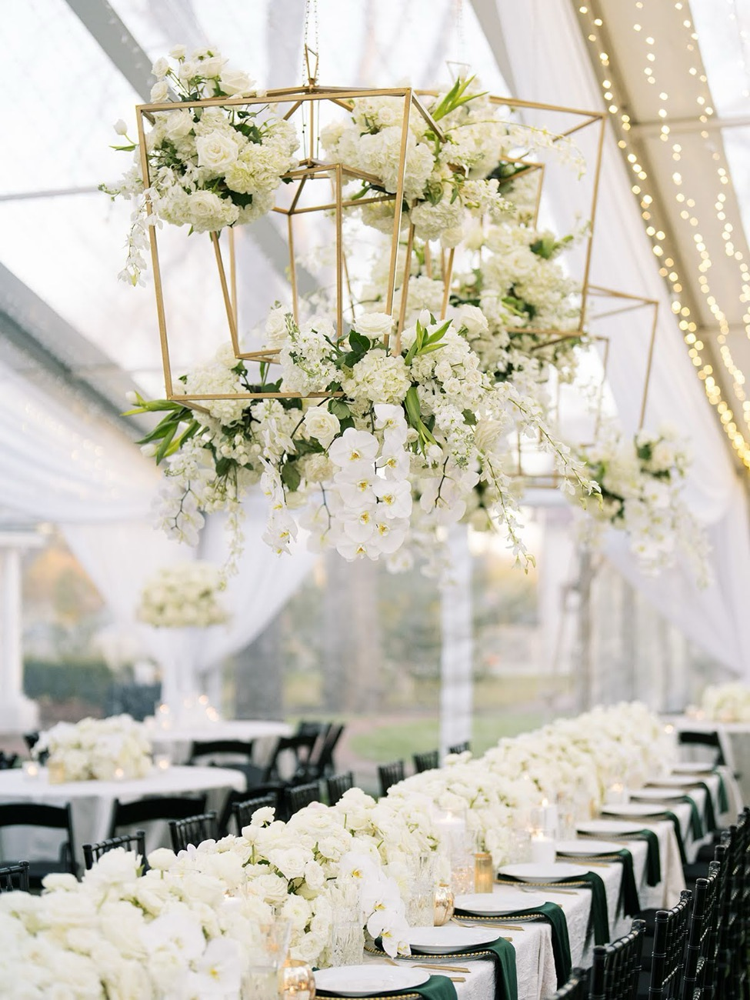
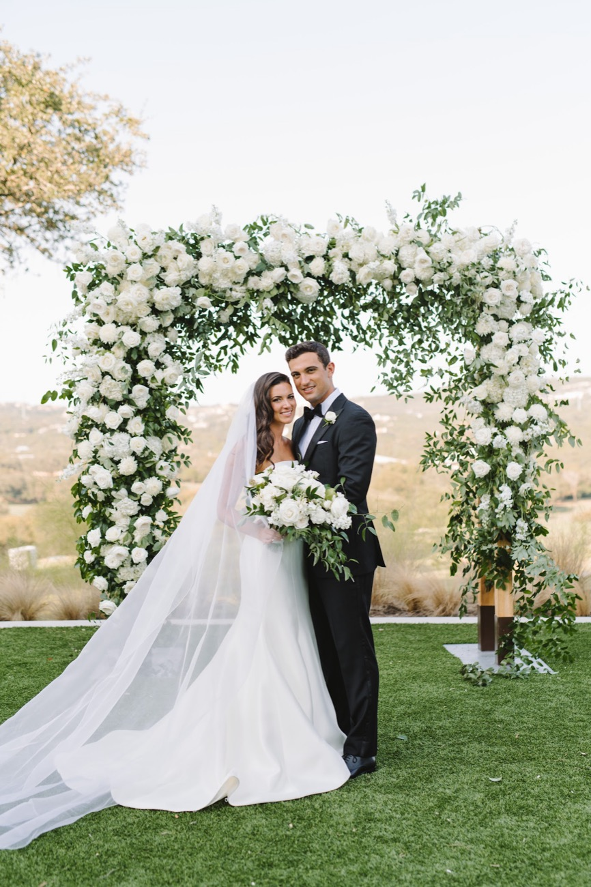
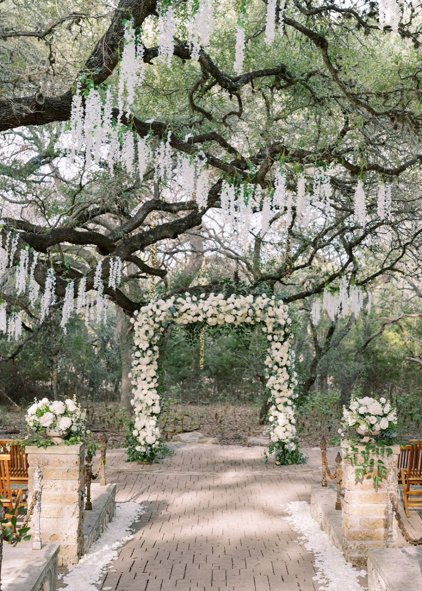
Wedding florals, since 1996
Designing your dream wedding
When you close your eyes and picture your wedding, what do you see? A traditional ballroom in green and white? An outdoor setting with pops of pink and orange? A historic venue in berry and burgundy? Whatever it is, we have you covered.
For three decades we've focused solely on weddings and special events, so each one gets the time, attention and care it deserves. Our designers have 50+ years of combined experience in floral and events, and we know Austin's top venues: how many pew markers a ceremony needs, which arch survives a windy lawn, which centerpieces fill the tables.
Articulating your vision
Feel at ease from the first call
- 01
Initial inquiry
A quick call with our office coordinator to share a general sense of your vision. We pair you with the designer who best matches your style.
- 02
Complimentary consultation
Meet your designer virtually or in person, about an hour to an hour and a half. They listen, take detailed notes, and you leave with a personalized proposal.
- 03
Your wedding day
The same designer is on site throughout setup, so what you imagined, what you saw in our photos and what's in your proposal are what you get.
Galleries
Timeless designs
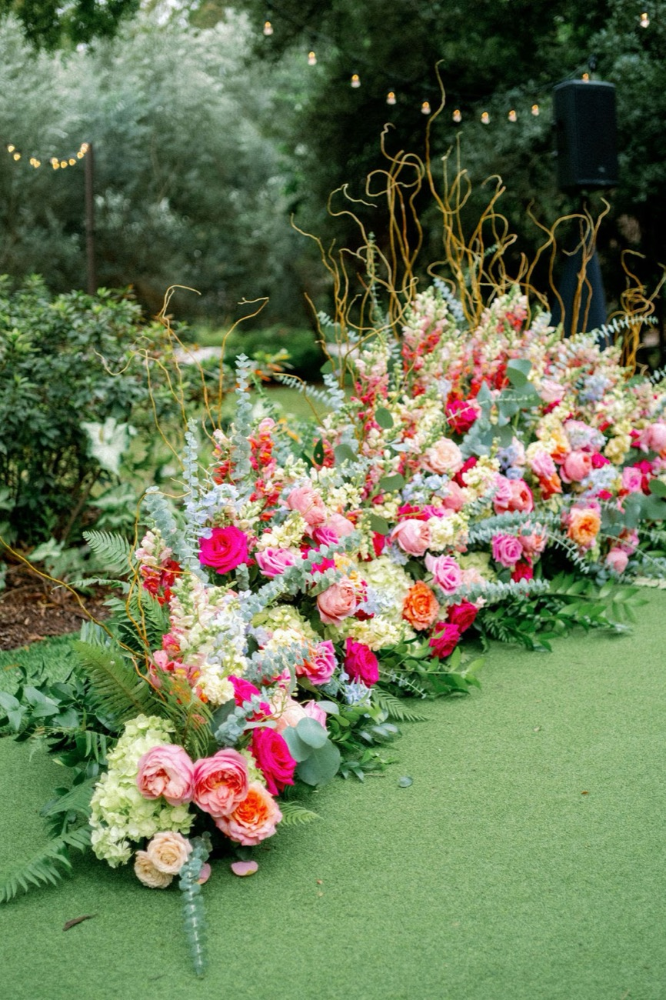
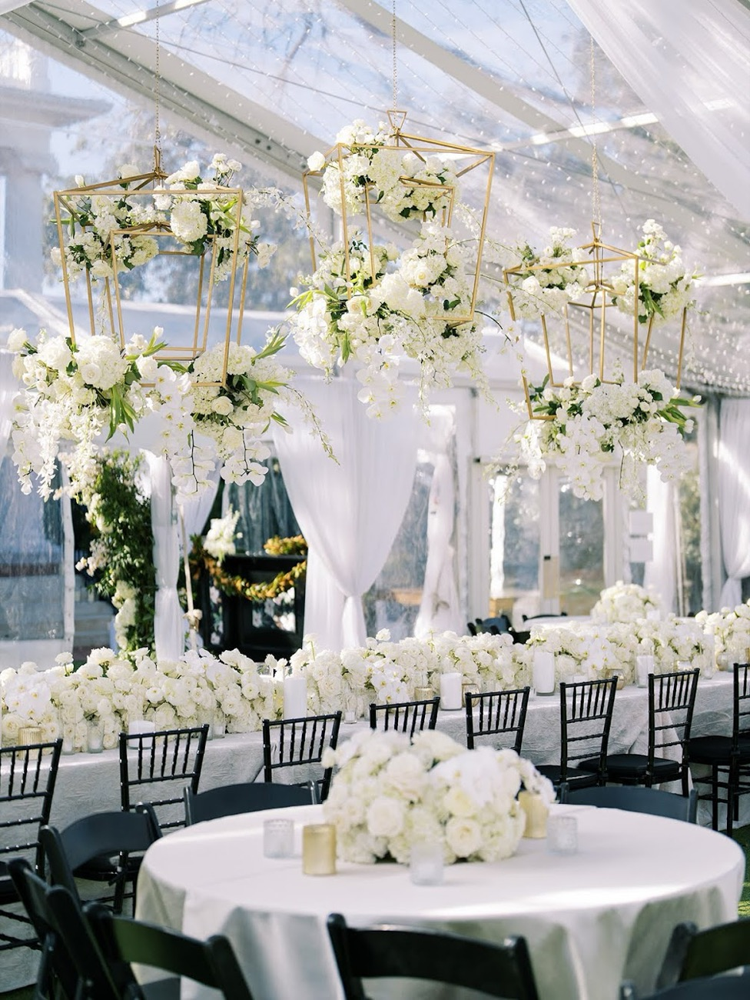
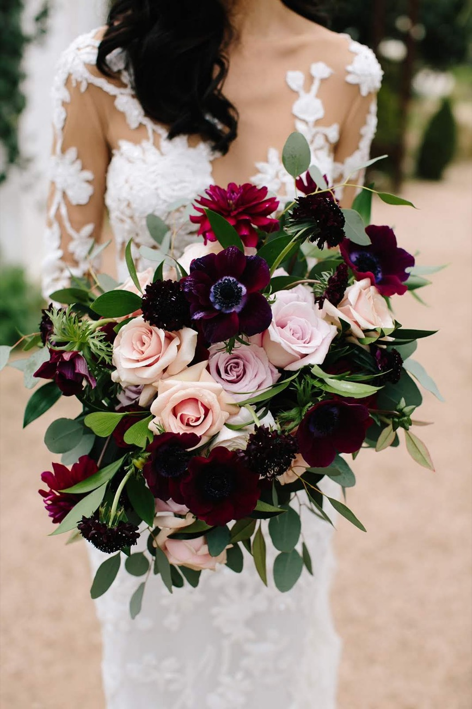
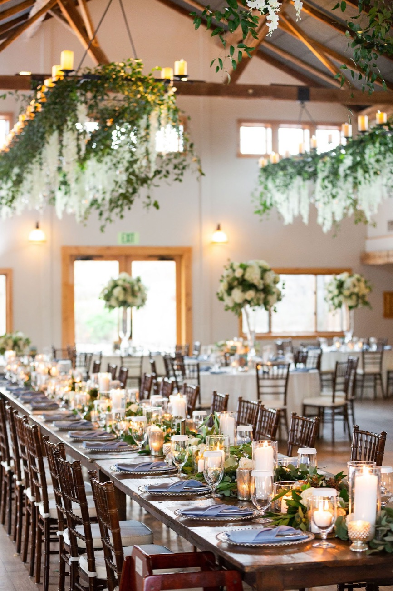
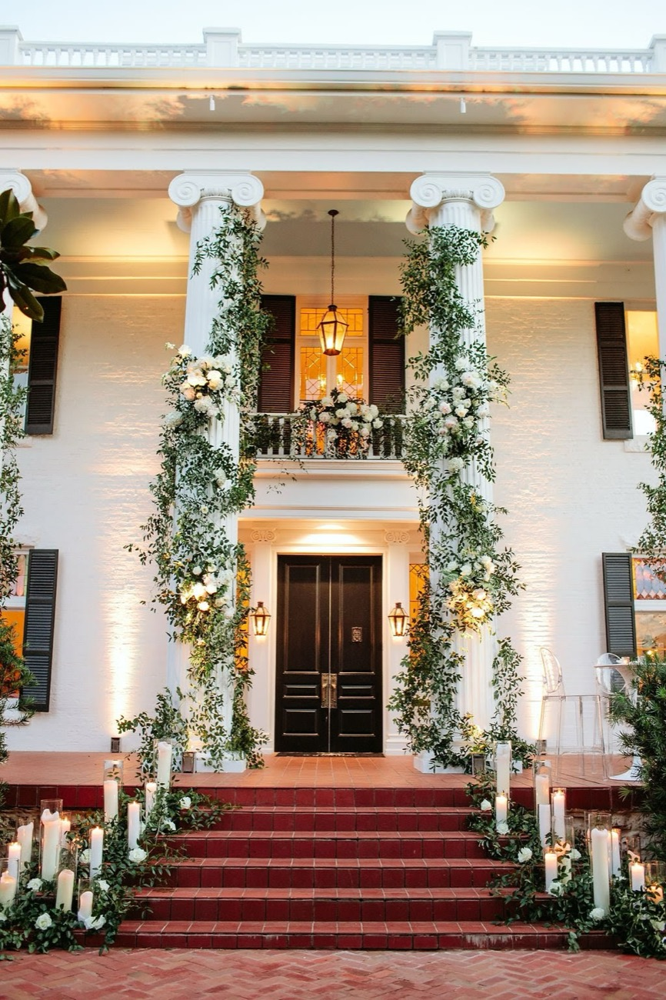
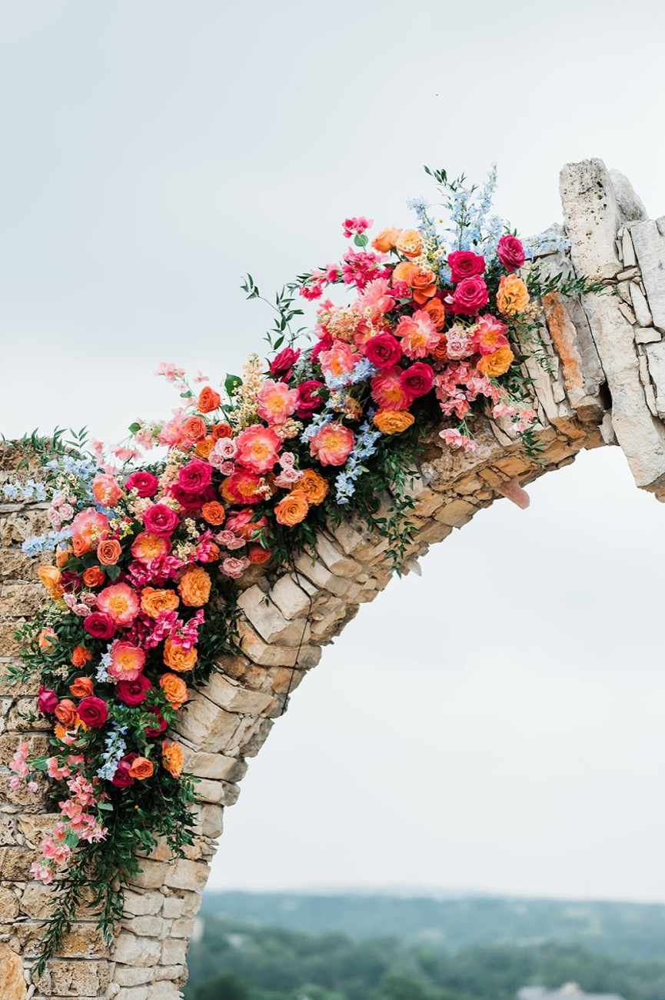
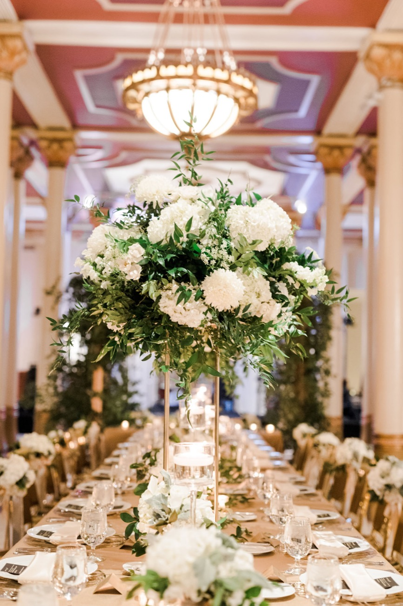
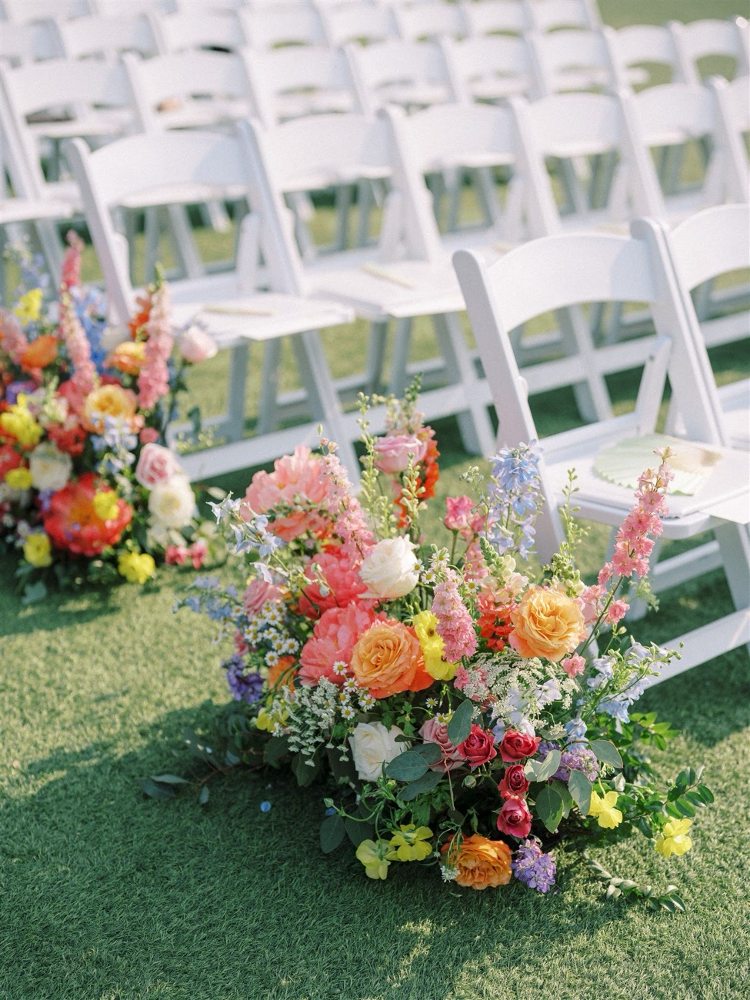
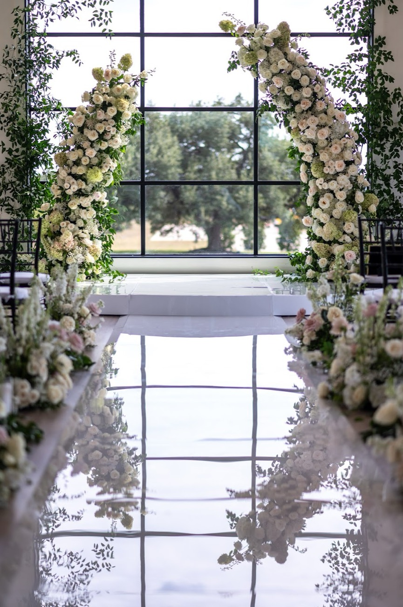
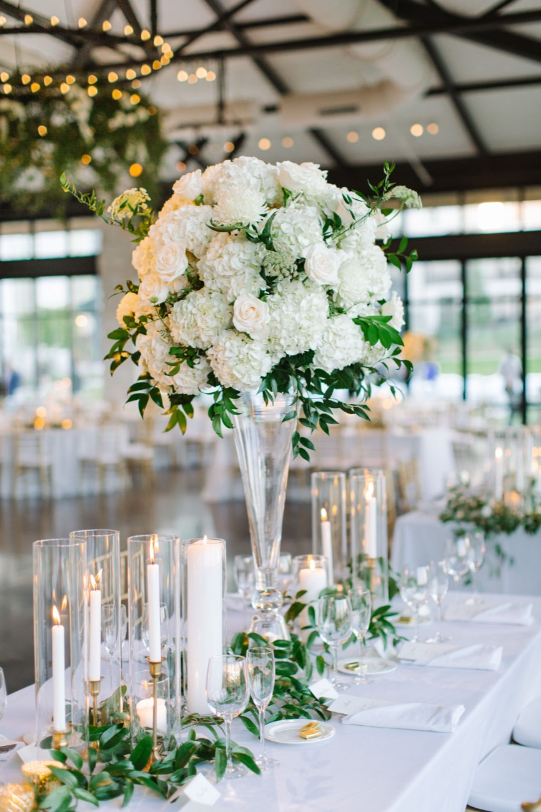
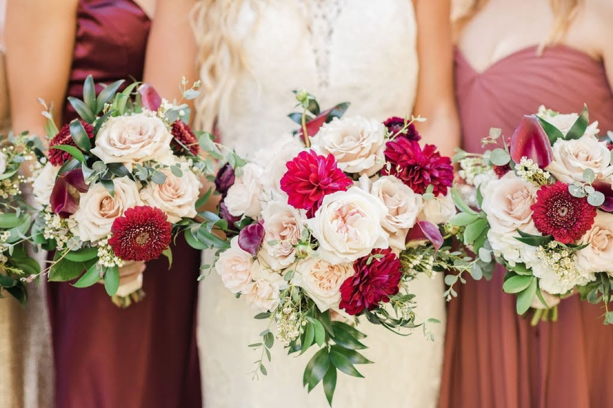
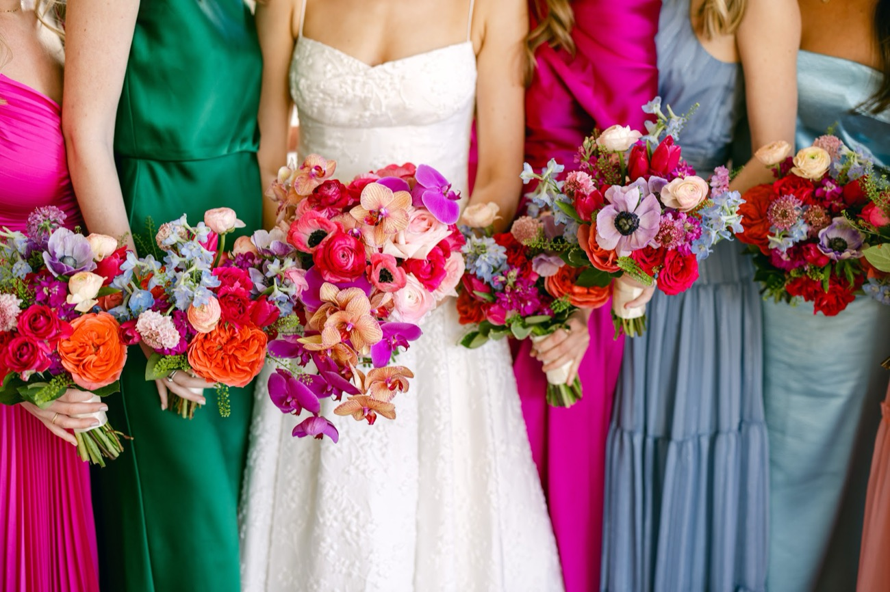
Services
We do it all
Personals
- Bouquets
- Boutonnieres
- Corsages
Ceremony
- Custom ceremony structures
- Altar arrangements
- Aisle decor
Reception
- Table centerpieces
- Ceiling installations
- Cake decor
Table top
- Vases and votives
- Candles
- Candelabras
No minimum spend requirement: beautiful flowers regardless of budget, with suggestions that respect it. Classic all-white bridal bouquets start at $250.
"Bouquets of Austin will over-deliver and exceed your expectations!"Jessica, bride
Together, we'll design your dream wedding